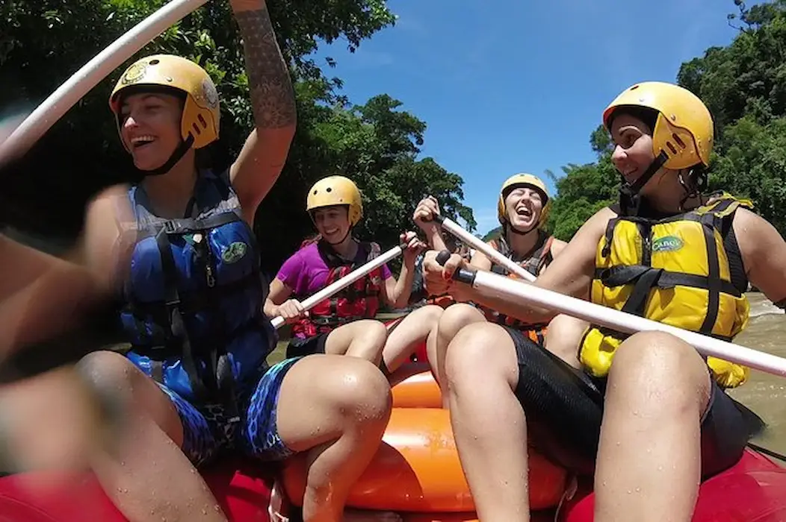
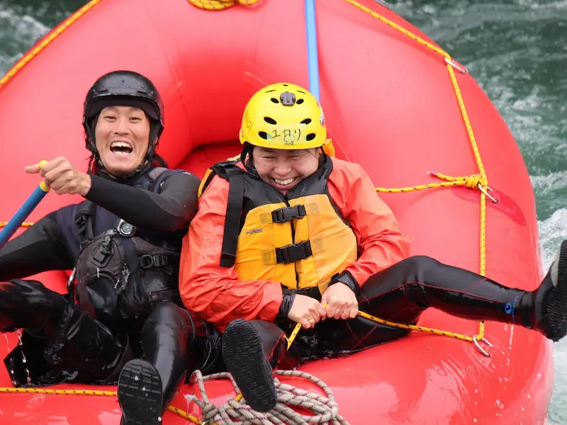

Purpose: Our purpose is to provide unforgettable water rafting adventures that connect people and nature.


Azorean water rafting adventures
History
Founded in the summer of 2024, Azorean water ratfting adventures as a way to connect people with nature. With a small team of passionate rafters, we embarked on a journey to discover the wonders of nature and create unforgettable memories for generations to come.